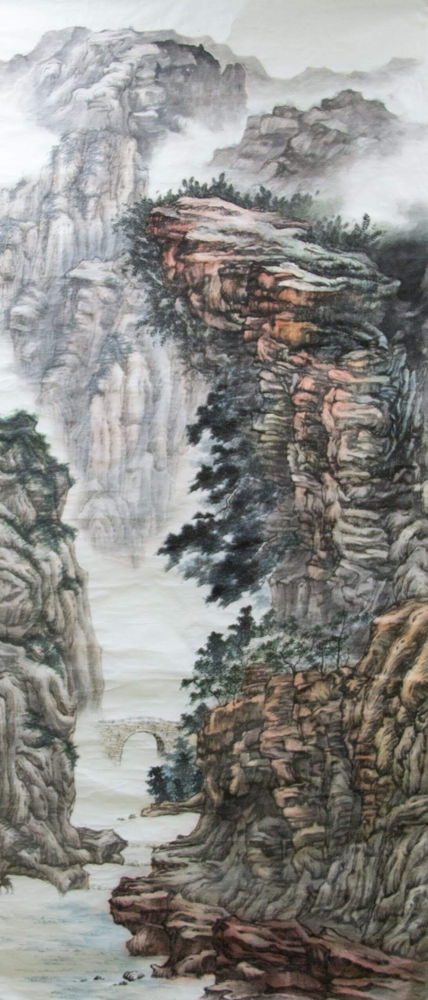

Chinese painting | Mountain

48 x 114 in | Prepared chinese ink and China paper
I sketched a lot of mountain views and combined them into a gigantic virtual scene. It took me three weeks to finish this painting.